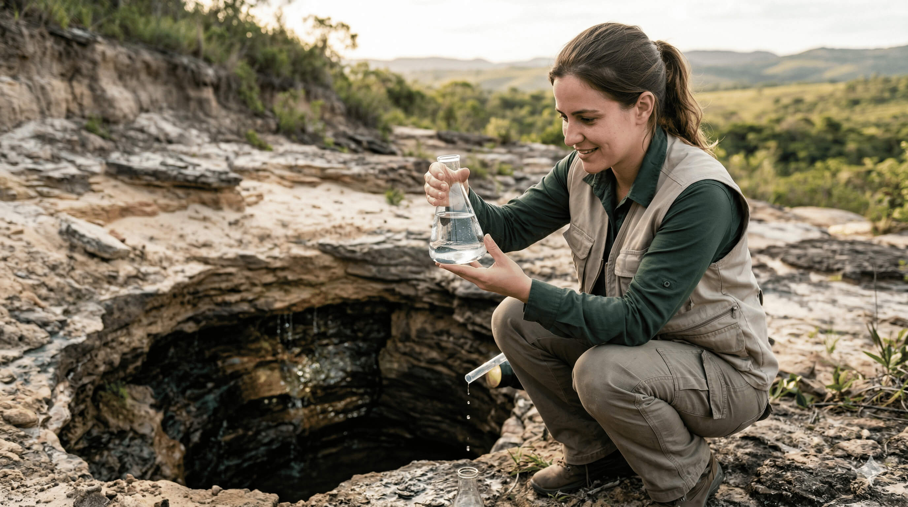
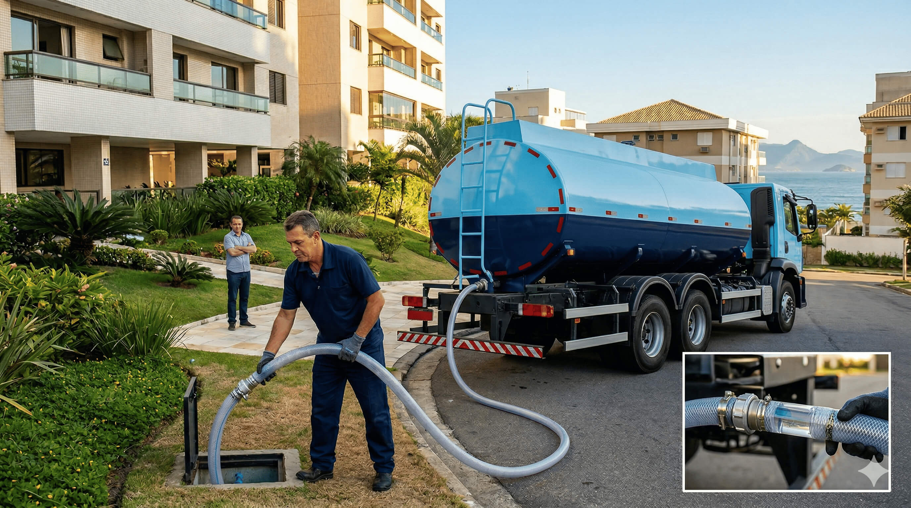
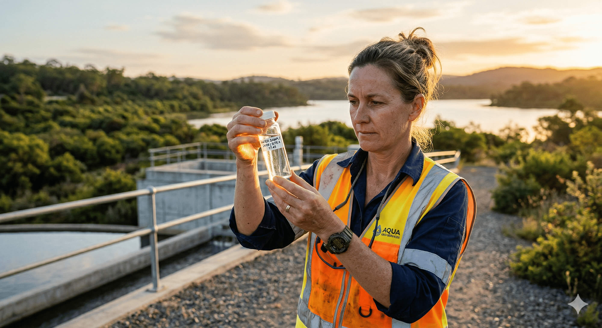
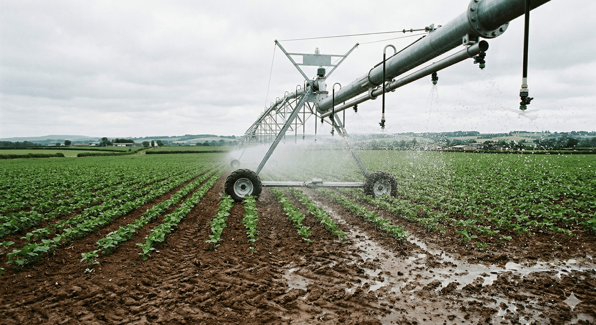

💡 Bom Saber
Informação de qualidade sobre água potável, conservação e saúde.

Hidrologia
O Tesouro Escondido: O que são as Águas Subterrâneas?
A maior parte da água doce do mundo está debaixo dos nossos pés, armazenada nos aquíferos. Saiba por que essa água é tão pura.

Sustentabilidade
Inteligência Hídrica e Responsabilidade Ambiental
Entenda como os aquíferos funcionam como reservatórios estratégicos e como o uso consciente protege o seu patrimônio.

Ética & Ciência
Ciência, Ética e o Futuro da Nossa Água
Descubra como a geoética une as geociências com o compromisso moral de gerir a água com transparência e responsabilidade.

Gestão Hídrica
Para onde vai a nossa água? Entenda o Uso Múltiplo
A mesma água atende cidades, indústrias e agricultura. Saiba como a gestão das bacias equilibra esses interesses.